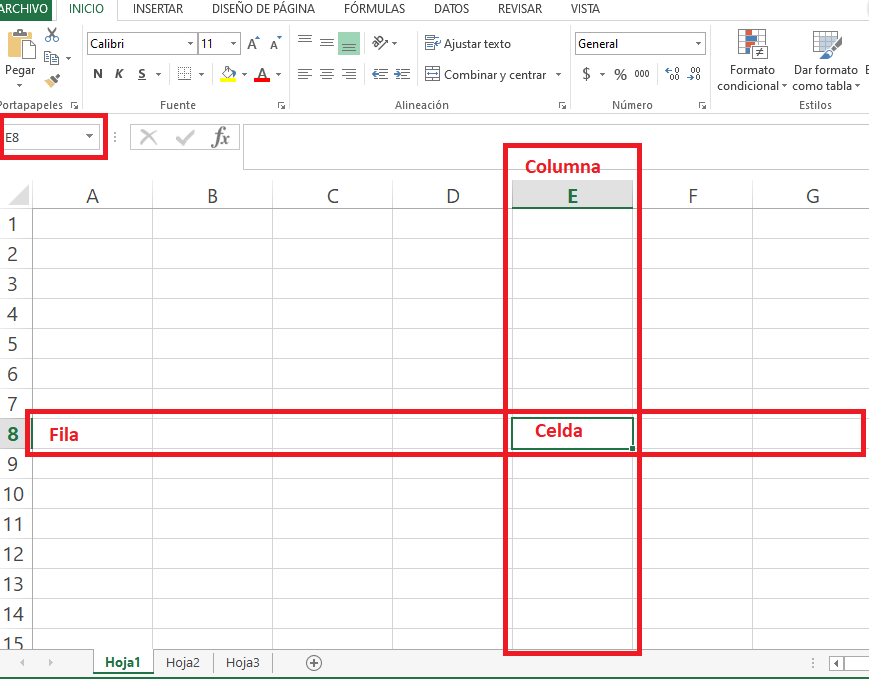
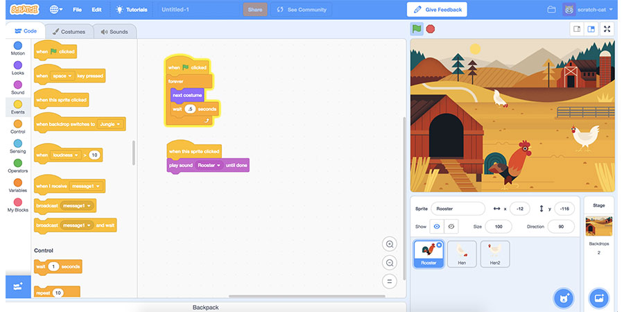

Tecnologías de Información y Comunicación
Submódulo 1: Gestión de archivos de texto
Submódulo 2: Hoja de cálculo
Submódulo 3: Desarrollo y características de documentos electrónicos
Submódulo 4: Comunidades virtuales
Submódulo 5: Mantenimiento y redes de cómputo
Submódulo 6: Sistemas deinformación
Submódulo 7: Programación
Submódulo 8: Programación visual
Submódulo 9: Páginas web
Submódulo 10: Diseño digital
Submódulo 11: Programación de aplicaciones de equipos móviles
Gestión de archivos de texto
Construye documentos electrónicos utilizando las distintas herramientas de inserción y diseño, favoreciendo la comunicación ética y creativa, cubriendo las necesidades de su contexto.Emplea la manipulación de plantillas, la automatización de procedimientos y conversión de documentos en PDF,favoreciendo su creatividad en la comunicación y respetando los derechos de autor, atendiendo diversas necesidades de su contexto.
Hoja de cálculo
Emplea la hoja de cálculo con funciones avanzadas, tablas dinámicas y/o macros, para resolver problemas de manera consciente y responsable de su entorno laboral y académico. Plantea soluciones a problemas del entorno personal, académico y laboral mediante la creación de gráficos combinados y de dispersión que le permitan tomar decisiones demanera creativa y reflexiva.
|

|

|
Desarrollo y características de documentos electrónicos
Emplea las presentaciones electrónicas para expresarse creativamente.Plantea soluciones a problemas del entorno personal,académico y laboral mediante la creación presentaciones electrónicas que le permita expresar una idea.
Comunidades virtuales
Define diferentes tipos de redes y comunidades virtuales, tanto personales, laborales y escolares, para el intercambio de información y archivos multimedia en el ámbito laboral y profesional de manera ética y responsable.Utiliza plataformas con actividades educativas innovadoras, así como comunidades virtuales, del ámbito escolar o profesional que favorezcan su formación continua..
Mantenimiento y redes de cómputo
Propone las características del equipo de cómputo, que satisfacen las necesidades de diferentes usuarios al emplear diversas configuraciones para un óptimo funcionamiento en el ámbito educativo, laboral y profesional, de forma innovadora y responsable.Utiliza las herramientas del sistema operativo para resolver problemas con losmedios de almacenamiento y la operación del sistema, trabajando de manera responsable y colaborativa en un contexto educativo, laboral o profesional.Aplica estrategias de mantenimiento para conservar en óptimo funcionamiento el equipo de cómputo previniendo problemas de operación en los ámbitos
Sistemas de información
Utiliza la metodología para el desarrollo de software,favoreciendo el trabajo colaborativo y creativo en la resolución de problemas de su contexto.Emplea los diferentes modelos de bases de datos, mostrando disposición al trabajo metódico y organizado, para resolver problemas de su contexto.
Programación
Plantea el uso de diagramas de flujo y algoritmos,fomentando su desarrollo creativo, para solucionar problemas cotidianos de su contexto.Explica los lenguajes de programación y sus metodologías de forma consciente, asertiva y empática, en la resolución de problemas del ámbitoacadémico y laboral.
Programación visual
Crear entornos gráficos mediante el uso de códigos. Utiliza los elementos de programación para resolver un problema.
|

|
|
Paginas web
Una página web es un documento electrónico que se puede acceder a través de internet. Las páginas web pueden contener texto, imágenes, videos, audio, y combinaciones de estos.
Diseño digital
Ilustra ideas publicitarias y de comunicación a través de diseño de imágenes digitales, utilizando diferentes herramientas de las aplicaciones de software de diseño, en un ambiente responsable y creativo.Crea animaciones multimedia, favoreciendo un ambiente de tolerancia y creatividad, para expresar ideas que den solución a problemas de su entorno. Aplica el software de diseño editorial para realizar estrategias creativas e innovadoras, en la transmisión de ideas, favoreciendo su creatividad en un ambiente ético y responsable dentro de su contexto.
Programación de aplicaciones de equipos móviles
Identifica la diferencia entre una aplicación móvil y un programa de escritorio. Muestra las ventajas de la creación de una aplicación móvil.Elabora una aplicación móvil mediante las herramientastecnológicas disponibles.